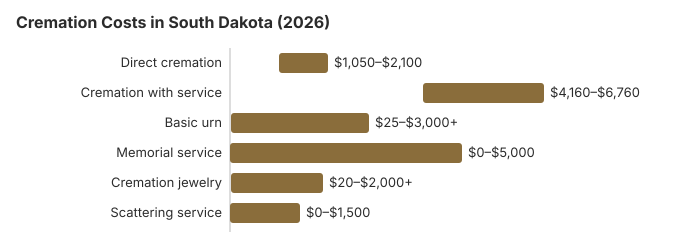

Cremation Costs in South Dakota (2026)
South Dakota's cremation market has matured enough in 2026 that the pricing is mostly predictable. Direct cremation lands near $1,500, cremation with a ceremony near $5,200, and the 52% cremation rate means most providers compete seriously on price. Here is what the numbers look like now, what regulations apply, and what to ask every South Dakota provider before you commit.
The Main Kinds of Cremation in South Dakota
Direct Cremation
- Most affordable cremation option
- No viewing or ceremony before cremation
- Body transferred directly to crematory
- Remains returned to family
- Memorial service can be held later
Cremation with Service
- Traditional funeral service before cremation
- Viewing or visitation possible
- Ceremony at funeral home or church
- Typically includes basic urn
- More similar to traditional funeral experience
South Dakota Cremation Prices by Item
| Item | Average Cost | Range |
|---|---|---|
| Direct cremation | $1,500 | $1,050 – $2,100 |
| Cremation with service | $5,200 | $4,160 – $6,760 |
| Basic urn | $50 – $300 | $25 – $3,000+ |
| Memorial service | $500 – $2,000 | $0 – $5,000 |
| Cremation jewelry | $50 – $500 | $20 – $2,000+ |
| Scattering service | $200 – $600 | $0 – $1,500 |
Methodology note: These figures are our estimates, not a survey of local providers, and they are not a quote or professional advice. See how we calculate them or read the full disclaimer.
State sources: South Dakota State Board of Funeral Service; SDCL 28-17-1; SDCL ch. 28-14; SDCL 34-26-17.

How South Dakota Cremation Compares With the Region
South Dakota's cremation rate (52%) reflects a shift that has been especially pronounced in Midwestern metro areas while remaining slower in rural counties. If you are comparing direct cremation providers in South Dakota, the price spread between a Sioux Falls-area provider and a small-town provider is typically smaller for cremation than for burial: another reason cremation has gained share here.
Cremation Resources
- Funeral Consumers AllianceNonprofit advocacy: compare cremation providers
- Cremation Jewelry GuideMemorial keepsakes and remembrance options
- Cremation vs. Burial CostsSide-by-side cost comparison
- Pet Cremation CostsOptions and prices for pet cremation and memorials
- Final Expense InsuranceCoverage options to help pay for cremation costs
Compare Funeral Costs
- Average Funeral Cost in 2026National cost breakdown with real prices
- Cremation vs. Burial Cost ComparisonSide-by-side price comparison to help you decide
- Funeral Cost BreakdownEvery line item explained: know what you're paying for
- Cheapest Funeral OptionsLower-cost alternatives, with typical price ranges
- Direct Cremation: Most Affordable OptionNFDA 2023 median $2,645 with a family-supplied container (latest available)
- How to Compare Funeral PricesStep-by-step guide to getting the best price
Keeping a Cremation in South Dakota Affordable
Cremation costs in South Dakota can be reduced with these strategies:
- Compare at least 3 cremation providers in South Dakota: Request written General Price Lists.
- Price direct cremation as standalone: South Dakota funeral homes often bundle direct cremation into broader packages.
What to Know Before Choosing Cremation in South Dakota
When considering cremation in South Dakota, keep these important points in mind:
- Directions a South Dakotan leaves about their own remains override the family order (SDCL 34-26-1); without them, control passes from a designated person to the spouse, then children, parents and siblings (SDCL 34-26-75). The order then moves to grandparents and more distant relatives, so a niece or nephew can sign only when everyone closer has died or cannot be found.
- If the coroner is investigating, a South Dakota crematory cannot proceed until the coroner gives a written release (SDCL 34-26A-14). Separately, the crematory needs a signed cremation authorization form and the burial permit before it accepts the body, and it may ask for any other paperwork the county requires (SDCL 34-26A-6).
- Ask the South Dakota provider how many days after the 24-hour wait the ashes are usually ready, and whether the price covers delivery or only pickup.
Frequently Asked Questions
How much does cremation cost in South Dakota?
Cremation costs in South Dakota range from $1,500 for direct cremation to $5,200 for a full funeral service followed by cremation.
Which cremation options exist in South Dakota?
South Dakota providers mostly quote two ends of the range: about $1,500 for direct cremation, with the body cremated and the ashes returned and no service, and about $5,200 for a funeral home service followed by cremation, a $3,700 step up.
Does South Dakota have specific rules for cremation?
South Dakota requires 24 hours between death and cremation (SDCL 34-26A-13.1); the waiver applies only to a virulent communicable disease. During that day the provider gathers the signed authorization and the burial permit. The section on cremation rules further down lists the board's number.
Can I scatter ashes in South Dakota?
Scattering laws in South Dakota vary by location. Some South Dakota families also choose columbarium niches, burial of ashes, or memorial keepsakes as alternatives to scattering.
Why do so many South Dakota families choose cremation?
This site estimates that about 52% of South Dakota families choose cremation, roughly 11 points below NFDA's 63.4% national projection for 2025. Where families do choose it, cost leads: direct cremation runs about $4,900 less than a traditional funeral in South Dakota. The freedom to set a memorial date later, environmental concerns and a national shift past 60% cremation add to it.
How quickly can cremation be completed in South Dakota?
From start to ashes, most cremations in South Dakota take 4 to 10 days. Direct cremation at $1,500 moves fastest: with no viewing or service to schedule, the only wait is the 24-hour wait South Dakota requires after death (S.D. Codified Laws § 34-26A-13.1).
Can I hold a funeral service before cremation in South Dakota?
Yes. In South Dakota a service with the body present followed by cremation costs about $5,200 on this site's estimates, typically $4,160 to $6,760, against about $1,500 for direct cremation.
South Dakota bars cremation until 24 hours after death and requires a signed cremation authorization and a disposition permit (S.D. Codified Laws § 34-26A-13.1). Ask the funeral home whether its price includes taking the body to the crematory after the service, and how many miles that covers.
More for South Dakota
Cremation rules and help in South Dakota
To check that a cremation provider in South Dakota is licensed, or to report a problem, contact the South Dakota State Board of Funeral Service at 605-642-1600.
South Dakota is absent from the Funeral Consumers Alliance's list of nine states limiting family-directed care, so once the permit exists a family may take the arrangements to a crematory on its own. Each crematory needs a license from the State Board of Funeral Service, and the application must name every certified crematory operator working there and show a refrigerated space for bodies awaiting cremation (SDCL 34-26A-4.1).
Timing and permits: South Dakota bars cremation until 24 hours after death and requires a signed cremation authorization plus a permit for disposition (S.D. Codified Laws § 34-26A-13.1).
If relatives cannot pay, the South Dakota county covers an indigent cremation (SDCL 28-17-1) and holds a lien on what the deceased owned. (Source: SDCL 28-17-1; SDCL ch. 28-14.) When everyone with the duty fails to act, it falls to the county of legal residence, or the county where the body was found, which then has a preferred claim on the estate for the actual cost (SDCL 34-26-17). Social Security's $255 death payment to a qualifying spouse or child pays just a slice of the $1,500 direct cremation figure above.
Cremated remains of an eligible South Dakota veteran can be placed in a VA national cemetery columbarium or in-ground site at no charge for the space. Options in South Dakota include Black Hills National Cemetery (605-347-3830), South Dakota Veterans Cemetery (605-277-8094), and Akicita Owicahe Lakota Freedom Veterans Cemetery (tribal, 605-455-1497). See cem.va.gov. Black Hills National Cemetery is near Sturgis.
Next steps for a cremation in South Dakota
- Ask whether a South Dakota cremation price includes the death certificates and the permit fee, which some providers bill separately.
- Allow at least 24 hours after death in South Dakota, plus time for the permit, before the cremation date.
- Ask the South Dakota county about the lien before accepting a county-paid cremation.
- Note the board's number, 605-642-1600, before you pay a cremation provider.